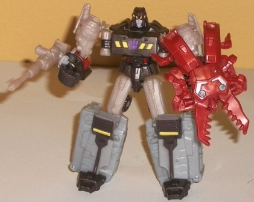

Difficulty of Transformations : Very Easy
Color Scheme : Dull milky rusty red, and some white, light orange, light milky gray, and light red
Individual Rating : 4.7
Allegiances
: Decepticon
Size
: Legends 2-pack
 Chop
Shop
Chop
Shop
Difficulty of Transformations
: Very
Easy
Color Scheme
: Dull milky rusty red,
and some white, light orange, light milky gray, and light red
Individual Rating
: 4.7
Chop Shop's insect mode
is a robotic stag beetle, heavily referencing his original G1 toy in its
original blocky aesthetics. The proportions are fairly solid, though the
legs are a bit small. The front two insect legs on each side also are very
obviously just molded onto the backside of his robot arms, though given
the small size I find this more forgiveable. The little mold details like
the square insect legs and the evil-looking "teeth" on the front, but the
paint detailing-- or any sort of color variety, really-- is lacking in
this mode, with only two little white paint apps on the top of the main
body. The only other color visible in this mode is entirely rusty red plastic--
which is a decent enough color, but some more of that white paint would've
helped. Still, at such a tiny size, this isn't a big problem compared to
if Chop Shop was a bigger toy. There isn't any articulation in this mode.
Chop Shop's weapon mode
(see Megs' pics below) looks a LOT like his insect mode. In fact, it IS
his insect mode, but with a 5mm peg folded out on the bottom to allow a
larger TF to hold him. The weapon "gimmick" here is that by splitting in
half Chop Shop's abdomen and compressing it again, you cause his jaws to
open and close, like a scissor-type weapon. The geared motion on such a
tiny toy is admittedly a little cool, but splitting apart the entire back
half to do the motion is a little odd, and can get in the way of the larger
figures in these two-packs holding them with their elbows curled, given
how far back the abdomen extends from where the underside handle is.
For robot mode, you
literally just turn Chop Shop up on his insect's back end. Voila! He's
got a whole robot mode detailed under there! The mold detailing really
comes out at such a small scale in this mode, with tiny hands, feet, and
chest details all molded in there. His headsculpt is also quite crisply
detailed, and the jaw pieces behind his head help enhance his silouhette.
The insect legs on the sides of his robot legs are obvious kibble, but
this is a really tiny negative, especially at this scale. Chop Shop's got
a few more paint apps in this mode-- beyond some white lines on his chest,
his head has light red paint on his visor, and his upper legs are a nice
light orange color, which complements the red quite well. His peg for weapon
mode-- in the middle of his chest here-- is a blah light milky gray, but
hey, at least Chop Shop's plastic is SOME color other than rusty red. Chop
Shop can move his arms forwards and back at the shoulders, but that's it
for articulation, unfortunately. (If you want to get technical, his legs
can partially do the splits at the hips, but this is a side effect of his
weapon mode gimmick, nothing more.)
Chop Shop looks decent
enough in his insect and robot modes, though I'd really hesitate to call
him a "Transformer" in the literal sense, since all you do is stand him
up or face him down to "transform" him. His weapon mode is also just his
insect mode with a peg flipped out-- it really could've used a bit more
differentiation to make it look a bit less like larger figures weren't
just holding a bug in their hands. Even for a little Legends partner figure,
he's a bit overly simplistic, and thus he gets relatively low marks for
this tiny size of toy, despite how decent he LOOKS in both modes.
 Megatron
Megatron

Difficulty of Transformation
: Easy
Color Scheme
: Light milky gray,
light milky tan, dark brown, and some light pale pinkish brown, yellow,
and red
Individual Rating
: 7.8
Megatron's alt mode for
this little version of him is a tank. For the most part, this mode looks
okay when it comes to proportions; the turret and the body of the tank
are (more or less) in proportion to each other, the turret has a long barrel,
and the like. The turret can also rotate all the way around, which is nice
at this scale (the barrel can't move up and down, though.) However, it's
a bit odd that the tank is a bit narrow proportionally when it comes to
the width, and then narrows even more somewhat suddenly halfway across
the chassis; it makes the mode look just a little bit "off". There are
a few minor robot kibble issues, mostly when it comes to detailing; Megatron's
hands are quite obviously molded onto the front of the turret, and the
back end LOOKS like his robot feet, though they're actually his robot knees.
On the back end, there's also a rather noticeably hollow section, with
only the top and side "outline" of a back end instead of it looking solid
back there-- thankfully, usually you aren't going to view this mode from
the rear. Megatron's mold detailing is quite possibly the highlight of
this mode, with incredibly intricate detailing all over the place-- yes,
it's befitting a tank, but at this scale all the little molded bits like
the tank treads, armor panels, turret "port hole", and even little "rivet"
details are all over the place. (As with most tank TFs, the treads don't
actually move-- they're just detailing, with little wheels on the underside
to actually move Megatron along on a flat surface.) If the mold detailing
is the upside to this mode, though, the color scheme is the downside. Quite
a bit of Megatron's plastic is that really blah, light milky gray plastic
that's used way too often, when a more metallic-looking shade of the color
would've looked much better. The other major color is a rather ugly, almost
pinkish shade of light tannish brown, and the plastic and the paint for
this shade don't at all match up (with the plastic being noticeably duller).
The dark brown is a decent color to contrast against the milky gray, I
guess, but all the major colors are either dull or ugly.
Megatron's transformation
is fairly simple-- mostly consisting of folding and unfolding a few parts--
but it leaves him with a remarkably different robot mode, and one that's
quite good-looking, overall. It becomes obvious here that this version
of Megatron is meant to be his "pre-War" version, when he was a miner--
hence, the yellow/black "caution" stripes on his chest and forehead. He
still has a Decepticon symbol, though, 'cause Megatron gotta be Megatron.
First, I'll get the negatives of this mode out of the way-- the hands are
a bit overly large (though this is partially so that he can hold weapons
with 5 mm pegs-- there's a 5 mm port on the topside of his left arm, too),
and the lower feet are a bit overly clunky proportionally, as well. The
color scheme is also still bad, though it's slightly better in this mode,
with the dark brown more prominent and a few accent colors like red and
yellow adding some desperately-needed real color to this toy. There's a
lot more positive about this mode, though-- the way the tank barrel forms
Megatron's "fusion cannon" is quite inventive, and he has no vehicle kibble
in this mode. Like, at all, which is especially impressive at this scale.
The mold and paint detailing is also quite intricate in this mode, with
bits like the waist and head looking particularly great-- his head even
has the little red "forehead eyebrows" that he did in the
Megatron:
Origin
comic miniseries! Now THAT'S impressive for this small of a
toy. Megatron's articulation is also very good-- he can move at the neck,
shoulders, elbows, hips, knees (at two points), and ankles, as well as
at the position where his cannon barrel meets his lower right arm. Seriously,
ankle articulation on a Legends figure? That's just awesome, and most of
his other articulation points are ball joints. He's one of the most poseable
and stable Generations Legends toys, period.
I'm a bit torn on Generations
Legends Megatron. On the one hand, he has some excellent paint and mold
detailing, no kibble in robot mode, and an outstanding range of articulation.
On the other hand, his lower arms and legs are a bit overly clunky in robot
mode, his tank mode does an odd "narrowing" bit part way down, and his
colors are just butt-ugly. As such, this guy ends up being about middle-of-the-line
as far as Generations Legends figures go.
The Megatron & Chop Shop set is a set for those who like articulation over kibble-free alt modes, and who generally aren't a big fan of the little Legends partner figure's "weapon modes" and just like them as their own separate toys. Chop Shop looks alright, but functionally isn't much of a Transformer, and is a bit of a disappointment for a partner figure. Megatron, on the other hand, has a mold that is above-average, but his awful color scheme knocks him to about average for a Legends 2-pack larger figure. If you want a pre-War Megatron figure-- or just a small, but really articulated, version of the guy-- this is a purchase. Otherwise, you're probably better getting other Generations Legends figures that more fit the small size class (and a larger Chop Shop, as was released ~2 years later).
Reviews by Beastbot